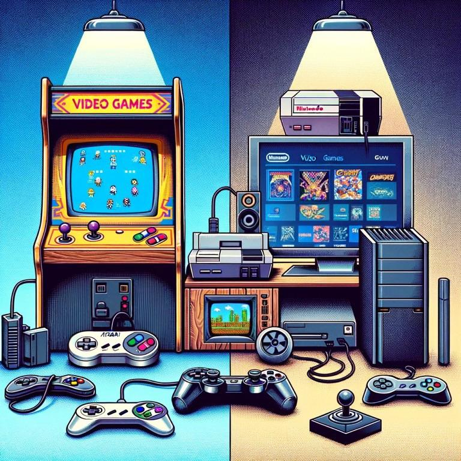

VideoGames


Video games are interactive digital experiences that combine storytelling, challenges, and creativity to entertain and engage players. From immersive adventures to fast-paced action, they offer something for everyone, bridging art and technology to create worlds where anything is possible.